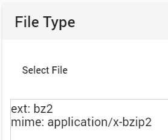

019 MISCall
下载得到无格式文件d02f31b893164d56b7a8e5edb47d9be5，查看文件类型。

改名为.bz2，进Kali解压。
root@kali:~/Desktop# tar xvf d02f31b893164d56b7a8e5edb47d9be5.bz2
ctf/
ctf/flag.txt
ctf/.git/
ctf/.git/description
ctf/.git/refs/
ctf/.git/refs/heads/
ctf/.git/refs/heads/master
ctf/.git/refs/stash
ctf/.git/refs/tags/
ctf/.git/ORIG_HEAD
ctf/.git/logs/
...
有flag.txt和隐藏文件夹.git，txt里无flag。说明需要从.git中恢复记录。
root@kali:~/Desktop/ctf# git log
commit bea99b953bef6cc2f98ab59b10822bc42afe5abc (HEAD -> master)
Author: Linus Torvalds <torvalds@klaava.Helsinki.Fi>
Date: Thu Jul 24 21:16:59 2014 +0200
Initial commit
// git记录，最近上传了一个文件
root@kali:~/Desktop/ctf# git stash list
stash@{0}: WIP on master: bea99b9 Initial commit
// 查看修改列表，储存列表中有一条记录
root@kali:~/Desktop/ctf# git stash show
flag.txt | 25 ++++++++++++++++++++++++-
s.py | 4 ++++
2 files changed, 28 insertions(+), 1 deletion(-)
// 校验列表中的储存文件
root@kali:~/Desktop/ctf# git stash apply
位于分支 master
要提交的变更：
（使用 "git restore --staged <文件>..." 以取消暂存）
新文件： s.py
尚未暂存以备提交的变更：
（使用 "git add <文件>..." 更新要提交的内容）
（使用 "git restore <文件>..." 丢弃工作区的改动）
修改： flag.txt
// 把上述文件恢复（需要先手动删除flag.txt
得到了s.py：
#!/usr/bin/env python
from hashlib import sha1
with open("flag.txt", "rb") as fd:
print "NCN" + sha1(fd.read()).hexdigest()
运行得到flag。
flag：NCN4dd992213ae6b76f27d7340f0dde1222888df4d3
020 Reverse-it
下载得到无格式文件，十六进制编辑器打开，开头是9D FF，联想到jpg格式文件尾是FF D9,。再看文件末尾是0E FF 8D FF，倒过来得到FF D8 FF E0，是jpg的文件头。很明显，这是一个jpg文件全部十六进制位倒转的结果。
这里用比较简单粗暴的方法，十六进制编辑器里复制全部十六进制数据，转为连续文本后在python中用[::-1]倒转，再复制回编辑器里保存成jpg文件。

再翻转一下。

flag：SECCON{6in_tex7}
021 sonething_in_image
下载得到badimages无格式文件，看看文件类型。
root@kali:~/Desktop# file badimages
badimages: Linux rev 1.0 ext3 filesystem data, UUID=ca014691-c6ea-4a5a-8da4-74a1aa1c9a80
ext3文件系统镜像可以用mnt命令挂载或用压缩软件解压，得到其中的文件。但本题可以直接用文本编辑器打开发现大量Flag.txt等字符，查找“Flag{”找到flag。或者使用strings命令：
root@kali:~/Desktop# strings badimages | grep Flag
.Flag.txt.swpe
Flag.txtt.swx
.Flag.txt.swpe
.Flag.txt.swx
.Flag.txt.swpe
Flag.txtt.swx
.Flag.txt.swpe
Flag.txtt.swx
.Flag.txt.swpe
Flag.txtt.swx
.Flag.txt.swpe
.Flag.txt.swx
.Flag.txt.swpe
Flag.txtt.swx
Flag.txt
Flag.txt
Flag.txt
Flag.txt
/mnt/test/Flag.txt
Flag{}
Flag{yc4pl0fvjs2k1t7T}
/mnt/test/Flag.txt
Flag{}
Flag{yc4pl0fvjs2k1t7T}
flag：Flag{yc4pl0fvjs2k1t7T}
022 打野
下载得到瞅啥.bmp。zsteg得到flag。

flag：qwxf{you_say_chick_beautiful?}
023 倒立屋
下载得到倒立屋.png，zsteg之。

很明显的LSB隐写，用Stegsolve也可以找到这串字符，但提交时要反过来。
flag：flag{9102_cCsI}
024 2017_Dating_in_Singapore
题目描述：01081522291516170310172431-050607132027262728-0102030209162330-02091623020310090910172423-02010814222930-0605041118252627-0203040310172431-0102030108152229151617-04050604111825181920-0108152229303124171003-261912052028211407-04051213192625
下载得到Year 2017 Calendar – Singapore.pdf，是新加坡的日历。
题目给出的数字一共有12组，各组里每两位都是01-31的数字，很明显和日期有关。在日历上标出各组日期：

flag：HITB{CTFFUN}
025 simple_transfer
下载得到pcap文件，wireshark打开内容实在太多了，先foremost。

有个PDF文件，打开。

flag：HITB{b3d0e380e9c39352c667307d010775ca}
026 Erik-Baleog-and-Olaf
下载得到stego100文件，实际是个png。Stegsolve打开，在Green和Blue plane 1处会发现疑似二维码。

十六进制编辑器打开，文件结尾处有EXthint http://i.imgur.com/22kUrzm.png。下载这张图片后与原图Image Combiner，保存XOR模式结果，再用Stegsolve打开。得到更清晰的二维码。
{kind=link}

Blue plane 1和0处的结果分别保存下来，用Image Combiner再次合成一张图片。

扫码得到flag。
flag：flag{#justdiffit}
027 hit-the-core
下载得到后缀名core的文件，十六进制编辑器查看文件头为ELF，但无法执行。binwalk和foremost均无结果，尝试strings，发现可疑字符串。

cvqAeqacLtqazEigwiXobxrCrtuiTzahfFreqc{bnjrKwgk83kgd43j85ePgb_e_rwqr7fvbmHjklo3tews_hmkogooyf0vbnk0ii87Drfgh_n kiwutfb0ghk9ro987k5tfb_hjiouo087ptfcv}
不是栅栏或凯撒，但每隔4位小写字母出现的大写字母依次是ALEXCTF。
a = 'cvqAeqacLtqazEigwiXobxrCrtuiTzahfFreqc{bnjrKwgk83kgd43j85ePgb_e_rwqr7fvbmHjklo3tews_hmkogooyf0vbnk0ii87Drfgh_n kiwutfb0ghk9ro987k5tfb_hjiouo087ptfcv}'
for i in range(3, len(a), 5):
print(a[i], end='')
flag：ALEXCTF{K33P_7H3_g00D_w0rk_up}
028 glance-50
下载得到gif文件，打开发现是个不断闪烁的长条形，猜测是将图片切分成长条当作gif的帧。GIFFrame拆之，得到201帧2x600的图像。写个Python来拼：
from PIL import Image
IMAGE_SIZE = 2 # 每张小图片的宽度大小
IMAGE_ROW = 600 # 图片的长度
IMAGE_COLUMN = 201 # 图片间隔，也就是合并成一张图后，一共有几列
new = Image.new('RGB', (IMAGE_COLUMN * IMAGE_SIZE, IMAGE_ROW)) #创建一个新图
k = 0
for i in range(0, 201):
name = 'C:/Users/Administrator/Desktop/gif/Frame' + str(i) + '.png'
frame = Image.open(name)
new.paste(frame, (k, 0))
k += IMAGE_SIZE
new.save('C:/Users/Administrator/Desktop/gif/flag.png')
补充：后来找到了更方便的方法，那就是Image Magick的montage命令。当然首先需要用其他工具把导出的png图片文件名重命名为000-200.png，否则Image Magick会用0、1、10、11、12这样的顺序来拼接图片。
C:\Users\Administrator\Desktop\GIF>magick montage *.png -tile 201x1 -geometry 2x600+0+0 out.png
flag：TWCTF{Bliss by Charles O'Rear}
029 Ditf
下载得到png文件，zsteg提示文件中有Rar文件头，binwalk分离之。是个内含Ditf.pcapng的加密压缩包。
同时该png文件在Kali下查看会提示IHDR CRC错误，十六进制编辑器改高度。

密码是StRe1zia，解压得到pcapng流量包。过滤http协议，逐项追踪HTTP流。

找到了特征明显的字符串：
ZmxhZ3tPel80bmRfSGlyMF9sb3YzX0ZvcjN2ZXJ9
base64转码得到flag。
flag：flag{Oz_4nd_Hir0_lov3_For3ver}
030 4-1
下载得到画风不一样的喵.png，十六进制编辑器查看，末尾存在50 4B文件头。binwalk分离，得到压缩包内含tips.txt和day2's secret.zip。tips.txt内容为：
Although two days doing the same things, but day2 has a secret than day1 -。-
day2's secret.zip解压得到day1.png和day2.png。双图隐写，考虑盲水印。盲水印脚本有多种，本题用这个。
root@kali:~/Desktop/blind-watermark-python3/BlindWaterMark# python2 bwm.py decode day1.png day2.png flag.png

flag：wdflag{My_c4t_Ho}
031 适合作为桌面
和 攻防世界高手区（1）里015题的做法完全一样。
flag：flag{38a57032085441e7}
032 心仪的公司
下载得到webshell.pcapng文件，wireshark打开。根据官方WP，设置过滤条件：
ip.addr == 192.168.1.0/24
过滤内网IP，发现192.168.1.111大量访问外网，猜测是192.168.1.108做反向代理攻击，过滤192.168.1.108，追踪tcp流得到flag。

另一种做法：
root@kali:~/Desktop# strings webshell.pcapng | grep {

以上命令是查找字符“{”，更泛用的为以下正则表达式命令：
strings webshell.pcapng | grep -E '^.*?{.*?}$'
^是正则表达式的开头，$是正则的结尾，中间的是flag。
.*代表任何字符串，?非贪婪模式最小匹配（在本例中即匹配时会在{前停下来）。
整体匹配的是****{*******}形式的字符串。
flag：fl4g:{ftop_Is_Waiting_4_y}
033 easycap
下载得到pcap文件，打开后所有数据包均为TCP协议，直接追踪TCP流得到flag。

flag：FLAG:385b87afc8671dee07550290d16a8071
034 双色块
下载得到out.gif文件，内容为一个小方块不断切换颜色并逐行扫描的动画。拆帧发现共有576帧，即24x24。再查看发现每8帧一组，每组开头帧（0、8、16……）均为绿色方块。考虑绿色为0，红色为1，将动画转成二进制串。
先用GIFFrame把每帧提取成Frame*.png，然后python脚本：
from PIL import Image
f0 = Image.open('C:/Users/Administrator/Desktop/gif/Frame0.png')
print(f0.getpixel((0, 0))) # 绿色块的颜色值(0, 255, 0, 255)
f1 = Image.open('C:/Users/Administrator/Desktop/gif/Frame1.png')
print(f1.getpixel((10, 0))) # 红色块的颜色值(255, 0, 255, 255)
result = ''
for i in range(0, 576):
name = 'C:/Users/Administrator/Desktop/gif/Frame' + str(i) + '.png'
img = Image.open(name)
x = (i % 24) * 10 # 小方块左上方点的横坐标
y = (i // 24) * 10 # 小方块左上方点的纵坐标
color = img.getpixel((x, y))[1]
if color == 255: # 绿色
result += '0'
elif color == 0: # 红色（紫色？）
result += '1'
print(result)
得到：
011011110011100001000100011011000111100001001011001010110100100000111000011101110111001101101001010110000110010100101111010001010101001001000110011100000100000101001101011000010100001001010000011010010100100101100011011010100011000101110011010010000111100101000111010011110100110101101101010100010100010001101011010010110010101101110101010110000111001101010110010110100110011101110010011001010011010101000100010100110101100001110111001111010011110101101000011010000110100001101000011010000110100001101000011010000110100001101000011010000110100001101000011010000110100001101000
每八位二进制转ASCII码：
o8DlxK+H8wsiXe/ERFpAMaBPiIcj1sHyGOMmQDkK+uXsVZgre5DSXw==hhhhhhhhhhhhhhhh
后面的重复h去掉，先试试base64，结果是乱码。考虑是否某种现代密码的base64格式密文。
把原始图片foremost一下，得到一张png图片。

DES在线解密得到flag。

flag：flag{2ce3b416457d4380dc9a6149858f71db}
035 很普通的数独
解压得到25张数独图片。

注意到1、5、21和25有类似方块的结构，考虑二维码。5x5排列后将有数字块记为黑色，无数字块记为白色，然后将定位部分的1换到右上角，5换到左下角，21换到左上角。
可以把黑白记为1和0后用以下Python脚本：
from PIL import Image
x = 45
y = 45
im = Image.new('RGB', (x, y))
white = (255, 255, 255)
black = (0, 0, 0)
with open('file.txt') as f:
for i in range(x):
ff = f.readline()
for j in range(y):
if ff[j] == '1':
im.putpixel((i, j), black)
else:
im.putpixel((i, j), white)
im.save("1.jpg")
得到二维码：

扫码得到：
Vm0xd1NtUXlWa1pPVldoVFlUSlNjRlJVVGtOamJGWnlWMjFHVlUxV1ZqTldNakZIWVcxS1IxTnNhRmhoTVZweVdWUkdXbVZHWkhOWGJGcHBWa1paZWxaclpEUmhNVXBYVW14V2FHVnFRVGs9
Base64七次得到flag。
flag：flag{y0ud1any1s1}
036 很普通的Disco
下载得到Disco.wav，audacity打开。

在音频开头处找到如图内容，以上方为1，下方为0，提取得到：
110011011011001100001110011111110111010111011000010101110101010110011011101011101110110111011110011111101
共105位，每七位ASCII转码得到flag。
flag：flag{W0W*funny}